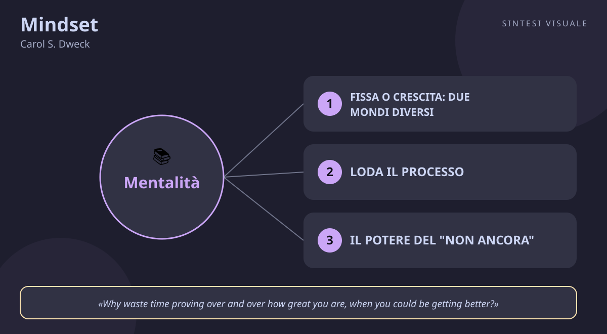

Mindset
Carol S. Dweck · Crescita personale
«Mindset»
- Fissa vs crescita
- Loda il processo
- Non ancora
- Falso mindset
🧭Introduzione
Carol Dweck non è una motivatrice da palco: è una psicologa di Stanford, tra le studiose più autorevoli al mondo di personalità e motivazione, che ha passato decenni a osservare bambini in aula prima di scrivere una sola riga di questo libro. La domanda che la tormentava era semplice e spietata: perché alcuni ragazzi, davanti a un problema difficile, si illuminano, mentre altri — spesso i più bravi — crollano o barano pur di non sbagliare? La risposta, pubblicata nel 2006 dopo vent'anni di ricerche, è diventata una delle idee più citate della psicologia moderna: non è il talento a decidere quanto lontano andrai, ma ciò che credi del talento.
Perché conta oggi: viviamo nell'epoca del confronto permanente — voti, follower, performance review, classifiche. Ogni giorno la testa ci sussurra "dimostra di essere all'altezza". Questo libro smonta quel meccanismo e lo sostituisce con una domanda più sana: "cosa posso imparare oggi?". È il manuale d'uso per chi si sente bloccato dal giudizio, proprio e altrui.
A chi è utile: a chi evita le sfide per paura di fare brutta figura, a chi si abbatte al primo fallimento, a genitori e insegnanti (il modo in cui lodi un bambino può costruirgli una gabbia), a manager e allenatori, e a chiunque debba imparare qualcosa di nuovo da adulto — una lingua, un lavoro, uno sport.
📘Riassunto
La scintilla centrale: le tue convinzioni sulle tue capacità contano più delle capacità stesse: se credi che il talento sia fisso, passerai la vita a difenderlo; se credi che si possa coltivare, passerai la vita ad accrescerlo.
La struttura logica procede in cinque atti:
- Le due mentalità — il fixed mindset (le qualità sono pietra: o ce l'hai o non ce l'hai) contro il growth mindset (le qualità sono il punto di partenza, non il verdetto). Ogni situazione, per la mentalità fissa, è un esame; per quella di crescita, è un allenamento.
- Le prove — decenni di esperimenti nelle scuole: i bambini lodati per l'intelligenza ("sei così intelligente!") scelgono poi compiti più facili e crollano davanti agli errori; quelli lodati per l'impegno ("devi aver lavorato sodo!") scelgono sfide più dure e resistono meglio.
- Il tour della vita — la stessa distinzione letta nello sport, nel business (il caso Enron, azienda ossessionata dal "talento naturale" che premiava solo la genialità esibita), nelle relazioni di coppia e nella genitorialità.
- Da dove nasce — la mentalità fissa si forma spesso presto: un voto, un giudizio, un'etichetta ("il bravo in matematica", "quella negata per le lingue") che diventa identità da difendere per sempre.
- Cambiare mentalità — il workshop finale: la mentalità si può cambiare a qualunque età, ma attenzione al falso growth mindset (ripetersi "posso farcela!" senza cambiare strategie non serve a nulla). E la mentalità non è solo individuale: intere aziende e famiglie ne hanno una.
Il punto di svolta: il capitolo sulle lodi. Scopri che dire a un bambino "sei un genio" — il complimento più affettuoso del mondo — può rendergli più difficile imparare: da lì capisci che non è l'autostima il carburante del successo, è il rapporto con l'errore.
L'eredità oggi: "growth mindset" è entrato nel linguaggio di scuole e aziende di tutto il mondo; il libro ha venduto oltre un milione di copie, è tornato più volte nella classifica dei bestseller anni dopo l'uscita e ha generato programmi scolastici, formazioni aziendali e un dibattito scientifico ancora vivo — segno che l'idea tocca un nervo scoperto di tutti noi.
💡Concetti chiave
- Fissa o crescita: due mondi diversi: la stessa bocciatura per uno è un verdetto ("non sono portato"), per l'altro è un dato ("devo cambiare metodo").
- Loda il processo, non il talento: "hai lavorato sodo" costruisce coraggio, "sei intelligente" costruisce paura di sbagliare.
- Il potere del "non ancora": sostituire "non ci riesco" con "non ci riesco ancora" tiene aperto il futuro.
- Il fallimento è informazione, non identità: per la mentalità di crescita sbagliare non significa essere un fallito, significa avere un feedback.
- Attento al falso growth mindset: dire "tutto si può imparare" senza fatica, strategia e aiuto non è crescita, è solo ottimismo pigro.
- La mentalità è contagiosa: genitori, insegnanti e capi trasmettono la propria mentalità con ogni giudizio; le organizzazioni stesse possono essere "fisse" o "di crescita".
📖1. Fissa o crescita: due mondi diversi
Definizione con la mentalità fissa credi che intelligenza e doti siano quantità assegnate una volta per tutte; ogni prova diventa un test del tuo valore. Con la mentalità di crescita credi che le stesse qualità si sviluppino con esercizio, strategie e aiuto; la prova diventa un'occasione per diventare più capace. Esempio due colleghi non ottengono una promozione. Il primo pensa "non sono tagliato per questo" e smette di proporsi. Il secondo pensa "mi mancano ancora due competenze: le imparo" e chiede un piano di crescita al capo. Stesso fatto, due futuri diversi. Come applicarlo (a) per una settimana annota sul telefono i tuoi pensieri da mentalità fissa ("non fa per me", "farò brutta figura"); (b) per ciascuno riscrivi la versione crescita ("non lo so fare ancora, da dove comincio?"); (c) rileggi la lista domenica sera e nota quante volte la paura del giudizio decideva al posto tuo. Errore comune credere di "essere" di un tipo una volta per tutte; in realtà la mentalità cambia per ambito (crescita in cucina, fissa nello sport) e per giornata — è una pratica, non un'etichetta nuova da appiccicarti addosso. Collegamento Albert Ellis e la REBT ("non sono gli eventi a turbarci, ma le convinzioni"); Epitteto duemila anni prima: conta il giudizio che dai ai fatti, non i fatti.
📖2. Loda il processo, non il talento
Definizione nel celebre esperimento con centinaia di bambini, una sola frase dopo un buon risultato cambiava tutto: lodati per l'intelligenza, i bambini sceglievano poi compiti facili per "restare intelligenti" e, dopo un insuccesso, peggioravano e baravano; lodati per l'impegno, sceglievano sfide più dure e tenevano duro. La lode al talento compra autostima a breve termine e la paga con la paura. Esempio al figlio che porta a casa un bel voto, invece di "sei un genio" prova "hai preparato bene quell'esame, si vede il lavoro": il primo lo lega al voto successivo, il secondo al metodo che può ripetere. Come applicarlo (a) bandisci per una settimana le etichette ("sei portato / non sei portato", anche con te stesso); (b) sostituiscile con verbi di processo: "ti sei allenato", "hai provato un'altra strada", "hai chiesto aiuto"; (c) quando qualcuno ti loda per il talento, risponditi dentro: "ok, ma cosa ho fatto di buono che posso ripetere?". Errore comune pensare che lodare l'impegno significhi lodare qualunque sforzo anche inutile ("basta impegnarsi"); Dweck è chiara: va lodato l'impegno efficace — strategia, progressi, scelte — altrimenti è consolazione, non crescita. Collegamento James Clear (Atomic Habits): vota l'identità attraverso i sistemi quotidiani, non attraverso i verdetti; Anders Ericsson (Peak): conta la pratica deliberata con feedback, non le ore generiche.
📖3. Il potere del "non ancora"
Definizione Dweck racconta di una scuola che invece di bocciare scriveva in pagella "Not Yet" — non ancora. La stessa insufficienza, letta così, smette di essere un marchio e diventa una posizione sul percorso: il cervello resta aperto invece di chiudersi a riccio. Esempio "non sono capace di parlare in pubblico" chiude ogni porta. "Non sono ancora capace di parlare in pubblico" apre la successiva: iscriviti a un piccolo corso, fai il primo intervento di tre minuti davanti a colleghi amici, chiedi un feedback. Come applicarlo (a) scegli la tua frase-freno ("non so l'inglese", "i numeri non fanno per me"); (b) aggiungici "ancora" e un primo passo da 20 minuti entro 48 ore; (c) fissa una data di verifica tra 30 giorni: rileggi la frase e misura cosa si è mosso davvero. Errore comune usare "ancora" come slogan magico senza cambiare nulla nel comportamento; la parola funziona solo se dietro c'è un piano (ore, metodo, aiuto), altrimenti diventa autoinganno zuccherato. Collegamento la self-compassion di Kristin Neff (trattarsi da alleati invece che da giudici accelera la ripresa dopo gli errori); il kaizen giapponese dei micro-passi quotidiani.
📖4. Il fallimento è informazione, non identità
Definizione nella mentalità fissa l'errore è un referto sul tuo valore ("ho preso 4, sono scarso"); in quella di crescita è un dato sul metodo ("ho preso 4, quel metodo non ha funzionato"). La differenza sembra sottile, ma decide se dopo una caduta ti nascondi o riprovi in modo diverso. Esempio un venditore che perde tre clienti di fila può concludere "non sono tagliato per vendere" e cercare un altro lavoro, oppure "il mio approccio telefonico non funziona con questo target" e testare visite di persona per un mese, misurando i risultati. Come applicarlo (a) dopo ogni brutta batosta, scrivi tre colonne: cosa è successo (fatti), cosa mi dice di me (giudizio), cosa mi dice del metodo (informazione); (b) cancella la seconda colonna — letteralmente, sbarrala; (c) dalla terza ricava UNA modifica da provare entro una settimana. Errore comune confondere "accettare il fallimento" con "accontentarsi": la crescita non è consolarsi ("va bene così"), è usare il dolore dell'errore come bussola per la prossima mossa, senza farne un dramma né una festa. Collegamento il metodo scientifico (l'ipotesi smentita è progresso, non vergogna); Samuel Beckett citato da tanti innovatori: "sbaglia, sbaglia ancora, sbaglia meglio".
📖5. Attento al falso growth mindset
Definizione anni dopo il libro, Dweck ha dovuto correggere il tiro: molti avevano ridotto la sua ricerca a "basta crederci e sorridere". Il falso growth mindset è dire "posso imparare tutto!" e poi non cambiare strategie, non chiedere feedback, non accettare critiche. La crescita vera è scomoda: chiede fatica, metodo e verità. Esempio ripeti "l'inglese si può imparare a ogni età" ma continui a guardare serie con i sottotitoli in italiano da due anni senza mai parlare con nessuno: hai lo slogan, non la mentalità. La mentalità vera prenota due ore a settimana di conversazione e accetta di fare figure barbine. Come applicarlo (a) prendi un tuo obiettivo "di crescita" e chiediti: quale strategia concreta sto seguendo? Chi mi dà feedback onesto?; (b) se la risposta è "nessuna/nessuno", l'obiettivo è uno slogan: datti strategia + revisore entro 7 giorni; (c) cerca attivamente una critica al mese sul tuo punto debole — chi la evita, sta proteggendo la mentalità fissa. Errore comune scambiare la positività per crescita ("pensa positivo e andrà tutto bene") e poi crollare al primo ostacolo serio, concludendo che "la mentalità di crescita non funziona" — quando non la si è mai praticata davvero. Collegamento Angela Duckworth (Grit): passione + perseveranza misurata negli anni, non entusiasmo di una settimana; Nassim Taleb: ciò che non ti espone alle critiche non diventa antifragile.
📖6. La mentalità è contagiosa
Definizione la mentalità non vive solo nella tua testa: ogni giudizio che dai la trasmette. L'azienda che assume solo "talenti naturali" dalle università migliori e premia chi non sbaglia mai — Dweck racconta il caso Enron — alleva dipendenti terrorizzati di ammettere gli errori. Le organizzazioni di crescita premiano invece imparare in fretta, chiedere aiuto, dire "ho sbagliato, ecco cosa ho capito". Esempio un capo che in riunione chiede "di chi è la colpa?" insegna a nascondere i problemi; un capo che chiede "cosa impariamo e come lo sistemiamo?" insegna a segnalarli presto. Dopo tre mesi, il primo capo scopre i disastri tardi, il secondo li previene. Come applicarlo (a) se guidi persone (figli, team, classe), sostituisci una domanda di giudizio a settimana con una domanda di crescita ("cosa hai provato di nuovo?" invece di "che voto hai preso?"); (b) racconta pubblicamente un tuo errore recente e cosa ci hai imparato — modella ciò che predichi; (c) nelle valutazioni, premi esplicitamente chi chiede aiuto e chi segnala presto un problema. Errore comune predicare la crescita e praticare il giudizio: dire "qui si può sbagliare" e poi punire (anche solo con una smorfia) chi sbaglia davvero. I figli e i collaboratori leggono i comportamenti, non i manifesti appesi al muro. Collegamento Amy Edmondson e la psychological safety (i team che ammettono gli errori imparano più in fretta); Google e il progetto Aristotle: i team migliori non sono quelli pieni di geni, ma quelli dove ci si sente sicuri di rischiare.
💬Citazioni da ricordare
"The passion for stretching yourself and sticking to it, even (or especially) when it's not going well, is the hallmark of the growth mindset." — la frase-manifesto: la crescita non è sentirsi sempre motivati, è restare sul pezzo proprio quando va male.
"Why waste time proving over and over how great you are, when you could be getting better?" — ogni volta che ti sorprendi a difendere la tua immagine invece di migliorare, rileggila: è la domanda che smaschera la mentalità fissa in diretta.
"When you enter a mindset, you enter a new world. In one world — the world of fixed traits — success is about proving you're smart or talented. Validating yourself. In the other — the world of changing qualities — it's about stretching yourself to learn something new. Developing yourself." — due mondi, stessa vita: il successo come vetrina oppure come cantiere.
🌍Esempi di oggi
Tre situazioni dove le due mentalità si vedono in azione:
- Il colloquio andato male. Torni a casa e pensi "non sono tagliato per quel ruolo": verdetto fisso, sipario. La versione crescita chiede all'azienda un feedback ("su cosa dovrei lavorare?"), si allena su quel punto e si ripresenta tra sei mesi — il no diventa un programma di allenamento.
- Il figlio e la verifica di matematica. "Ho preso 5, sono negato" è l'etichetta che diventa destino. Il genitore-growth risponde: "vediamo insieme quali esercizi hai sbagliato e perché" — sposta l'attenzione dal valore del bambino al metodo, e il voto successivo quasi sempre ringrazia.
- Il collega promosso al posto tuo. La mentalità fissa legge l'evento come classifica definitiva ("lui è meglio di me, punto") e comincia a remare contro. Quella di crescita lo legge come informazione: cosa sa fare lui che io non so ancora fare? Magari diventa il tuo mentore invece del tuo nemico.
🛠️Azioni pratiche
- La caccia al pensiero fisso (5 minuti al giorno): ogni sera annota UNA frase da mentalità fissa che hai pensato ("non fa per me", "farò scena muta") e riscrivila in versione crescita con "ancora" + un primo passo concreto.
- Una lode di processo (1 minuto, ogni giorno): loda una persona — figlio, collega, te stesso — per qualcosa che ha fatto (strategia, impegno, miglioramento), mai per com'è ("intelligente", "portato"). Nota la differenza nelle reazioni.
- Il diario dell'errore utile (10 minuti, una volta): prendi l'ultimo fallimento che brucia ancora, dividilo in tre colonne (fatti / giudizio su di me / informazioni sul metodo), sbarra la seconda e ricava dalla terza una sola modifica da testare nei prossimi 7 giorni.
💎Da portare a casa
Non devi dimostrare quanto vali: devi decidere quanto vuoi crescere — e poi pagare il prezzo in fatica, errori e "non ancora".
💬Approfondimento in chat
Rispondi con il numero (1-6) del concetto che vuoi espandere ulteriormente, oppure con un tema a cui vuoi dedicare il prossimo libro: public speaking, vendite, negoziazione, stress, emozioni, carriera...
🖼️In un colpo d’occhio

Tocca l’immagine per ingrandirla.